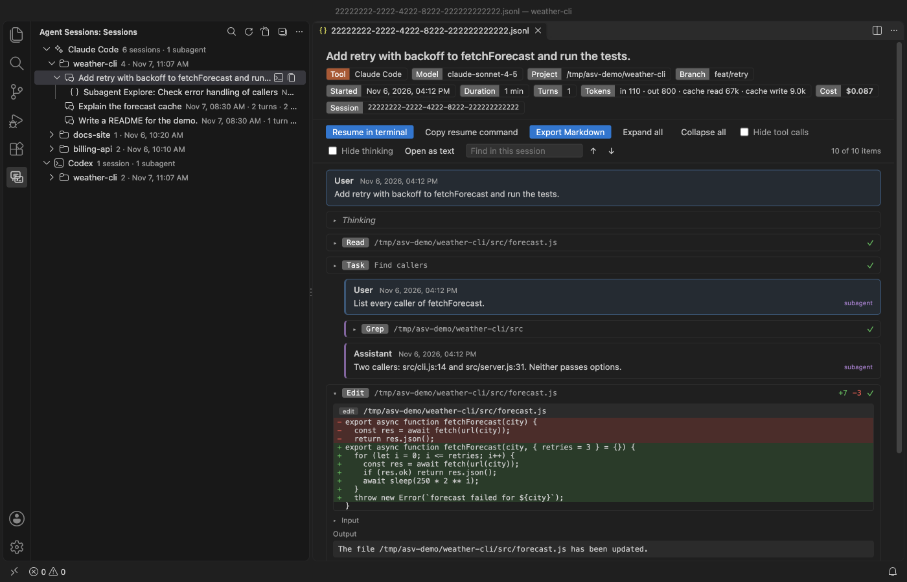

อ่านและ resume ประวัติ Claude Code ใน VS Code
ติดตั้ง Claude Code History & Codex History Viewer (Agent Session Viewer) ส่วนขยายจะแสดงเซสชัน Claude Code จาก ~/.claude/projects และเซสชัน Codex จาก ~/.codex/sessions ในมุมมองด้านข้างเดียวกัน เปิดแต่ละเซสชันเป็นบทสนทนาที่อ่านง่าย และ resume ในเทอร์มินัลได้ด้วยคลิกเดียว การอ่าน การค้นหา การ resume และการ export เซสชันเดียวเป็น Markdown ใช้ฟรีโดยไม่ต้องมีบัญชี Zovo Pro (19 ดอลลาร์สหรัฐ จ่ายครั้งเดียว) เพิ่มรายงานการใช้งานและค่าใช้จ่าย การ export แบบปลอดภัยสำหรับแชร์ที่ปิดบังข้อมูลลับ และการ export หลายเซสชันพร้อมกันเป็น Markdown โดยลองใช้ฟรีได้ตัวละ 3 ครั้ง
ใช้ฟรี ไลเซนส์ MIT รหัสส่วนขยาย zovo.agent-session-viewer เวอร์ชัน 0.3.4
คู่มือนี้มีภาษาอื่นด้วย English · Français · Italiano · Português (Brasil) · Polski · 简体中文 · Čeština · हिन्दी · Bahasa Indonesia · 한국어 · Nederlands · Русский · Svenska · Türkçe · Українська · Tiếng Việt · 繁體中文 · Deutsch · Español · 日本語

ขั้นตอนใน VS Code
- ติดตั้ง Agent Session Viewer จาก Marketplace หรือกด Ctrl+P (Cmd+P บน macOS) แล้วรัน
ext install zovo.agent-session-viewer - คลิกไอคอน Agent Sessions ใน activity bar มุมมอง Sessions จะแสดงเซสชัน Claude Code และ Codex จัดกลุ่มตามโฟลเดอร์โปรเจกต์ โดยมี subagent อยู่ใต้เซสชันที่เรียกมันขึ้นมา
- คลิกเซสชันเพื่ออ่าน การเรียก tool จะถูกยุบไว้ การเรียกที่ล้มเหลวมีเครื่องหมายสีแดง และการแก้ไฟล์แสดงเป็น diff ส่วนหัวแสดงโมเดล git branch จำนวน turn และยอด token รวม
- ถ้าต้องการหาเซสชันเก่า ให้คลิกไอคอนค้นหาด้านบนของมุมมอง หรือรัน "Agent Sessions: Search Sessions" จาก Command Palette แล้วเลือกผลลัพธ์เพื่อเปิดเซสชันตรงจุดที่เจอ
- คลิกไอคอนเทอร์มินัลข้างเซสชัน (Resume in Terminal) เทอร์มินัลจะเปิดในโฟลเดอร์โปรเจกต์และรัน
claude --resume <id>หรือcodex resume <id> - สำหรับไฟล์เซสชัน
.jsonlในโฟลเดอร์อื่น ให้คลิกขวาที่ไฟล์ เลือก Open With แล้วเลือก Agent Session Viewer
อะไรใช้ฟรี และ Zovo Pro เพิ่มอะไร
tree ของ Sessions การอ่านเซสชัน การค้นหาข้ามเซสชัน Resume in Terminal, Copy Resume Command การ export เซสชันเดียวเป็น Markdown มุมมอง raw และ Reveal in File Manager ใช้ฟรีทั้งหมด ไม่จำกัดจำนวนประวัติ และไม่ต้องลงชื่อเข้าใช้
Share-safe export บันทึกเซสชันเดียว หรือทุกเซสชันของโปรเจกต์ เป็นหน้า HTML ไฟล์เดียวที่ครบในตัว หรือเป็นไฟล์ Markdown ไฟล์เดียว API key, token, รหัสผ่านใน URL, ค่าใน .env, private key, อีเมล และโฟลเดอร์ home ของคุณจะถูกแทนด้วย [REDACTED ...] และข้อความแจ้งจะบอกว่าซ่อนอะไรไปบ้าง คุณจึงส่งเซสชันไปประกอบ pull request, การ audit หรือการส่งมอบงานได้โดยไม่ต้องลบข้อมูลเอง
วิธีใช้ Share-safe export (Zovo Pro)
- เปิดเซสชัน แล้วคลิกปุ่ม Share-safe export ในแถบเครื่องมือของเซสชัน หรือคลิกขวาที่เซสชันหรือโฟลเดอร์โปรเจกต์ใน tree ของ Sessions แล้วเลือก "Share-Safe Export, Secrets Redacted (Pro)…"
- เมื่อเปิดเซสชันอยู่ จะรัน "Agent Sessions: Share-Safe Export, Secrets Redacted (Pro)…" จาก Command Palette ก็ได้
- เลือกรูปแบบเป็นหน้า HTML หรือ Markdown แบบมีหรือไม่มี output ของ tool แล้วเลือกที่บันทึกไฟล์
- อ่านไฟล์ที่ export ก่อนแชร์ สิทธิ์ลองใช้จะถูกนับเฉพาะเมื่อบันทึกไฟล์แล้ว การกด Escape หรือ Cancel ไม่เสียสิทธิ์
Share-safe export ใช้ได้ฟรี 3 ครั้งบนเครื่องของคุณก่อนจะขอไลเซนส์ ไม่มีป๊อปอัปและไม่มีการนับถอยหลัง
Zovo Pro ราคา 19 ดอลลาร์สหรัฐ จ่ายครั้งเดียว ไม่ใช่แบบ subscription และไลเซนส์จะเปิดเครื่องมือ Pro ในส่วนขยาย Zovo ทุกตัว ไม่ใช่แค่ใน Agent Session Viewer หลังจ่ายด้วยบัตร (Stripe) คีย์ไลเซนส์จะแสดงในหน้าถัดไป ใน VS Code ให้รัน "Zovo Pro: Enter Zovo Pro license key" จาก Command Palette แล้ววางคีย์ คีย์จะถูกตรวจบนเครื่องของคุณโดยไม่ต้องเชื่อมต่อเครือข่าย ถ้าจ่ายผ่าน GitHub Sponsors ให้เลือกระดับ "$19 one time" แล้วรัน "Zovo Pro: I already paid: unlock with GitHub Sponsors"
ทีม 5 คนจ่าย 59 ดอลลาร์สหรัฐ ครั้งเดียวเช่นกัน (จ่ายด้วยบัตร) กติกาทั้งหมดและเครื่องมือ Pro ทุกตัวอยู่ในหน้า Zovo Pro (ภาษาอังกฤษ)
ขั้นตอนใน Cursor, Windsurf หรือ VSCodium
- เปิดมุมมอง Extensions ด้วย Ctrl+Shift+X (Cmd+Shift+X บน macOS)
- ค้นหา
zovo.agent-session-viewerแล้วคลิก Install ทั้ง Cursor, Windsurf และ VSCodium ติดตั้งส่วนขยายจาก Open VSX ซึ่งส่วนขยายนี้ใช้ชื่อzovo/agent-session-viewer - ถ้า editor ของคุณไม่มีหน้าค้นหาส่วนขยาย ให้ดาวน์โหลดไฟล์ .vsix จากหน้า Open VSX แล้วรัน "Extensions: Install from VSIX..."
- จากนั้นทุกอย่างใช้งานได้เหมือนใน VS Code
Agent Session Viewer ทำอะไรได้บ้าง
- เซสชัน Claude Code ใน
~/.claude/projects(หรือ$CLAUDE_CONFIG_DIR/projects) และเซสชัน Codex ใน~/.codex/sessions(หรือ$CODEX_HOME/sessions) - subagent ของทั้งสองเครื่องมือ ซ้อนอยู่ใต้เซสชันที่เรียกมันขึ้นมา
- ส่วนหัวที่แสดงเครื่องมือ โมเดล โฟลเดอร์โปรเจกต์ git branch ระยะเวลา จำนวน turn ยอด token รวม และค่าใช้จ่ายเมื่อไฟล์บันทึกไว้ (Claude Code บันทึก แต่ Codex ไม่บันทึก)
- การแก้ไฟล์แสดงเป็น diff (Edit, Write และ apply_patch) ส่วน thinking และสรุป reasoning ของ Codex จะถูกยุบไว้
- ชื่อ thread ของ Codex จาก
session_index.jsonlthread ที่ตั้งชื่อใหม่จึงยังแสดงชื่อนั้น
สิ่งที่ยังทำไม่ได้
- อ่านได้เฉพาะ Claude Code และ Codex ยังไม่รองรับเซสชันของ Cursor, Copilot และ Gemini CLI
- เป็นแบบอ่านอย่างเดียว ไม่แก้ ไม่ย้าย และไม่ลบไฟล์เซสชัน และไม่มีคำสั่งลบ
- การค้นหาจับคู่ข้อความธรรมดา ไม่ใช่ regular expression และหยุดที่ 300 ผลลัพธ์
- Resume in Terminal ต้องติดตั้ง Claude Code หรือ Codex และเรียกได้จาก PATH ของเทอร์มินัล
- ค่าเริ่มต้นอ่านไฟล์ได้ถึง 256 MB (
agentSessionViewer.maxFileSizeMB) ไฟล์ที่ใหญ่กว่านั้นจะเปิดเฉพาะส่วนแรก และ reasoning ของ Codex ที่เก็บแบบเข้ารหัสไว้จะแสดงไม่ได้
คำถามที่พบบ่อย
Claude Code เก็บประวัติแชตไว้ที่ไหน
ใน ~/.claude/projects โดยมีหนึ่งโฟลเดอร์ต่อโปรเจกต์ และหนึ่งไฟล์ .jsonl ต่อเซสชัน ถ้าตั้ง CLAUDE_CONFIG_DIR ไว้ จะอยู่ใต้โฟลเดอร์นั้นแทน
ใช้ฟรีไหม
ใช้ฟรี การอ่าน การค้นหา การ resume และการ export เซสชันเดียวเป็น Markdown ใช้ฟรีโดยไม่จำกัดจำนวนประวัติ เครื่องมือ Pro ทั้งสามตัว (รายงานการใช้งานและค่าใช้จ่าย, share-safe export และ bulk export) ลองใช้ฟรีได้ตัวละ 3 ครั้ง หลังจากนั้น Zovo Pro ราคา 19 ดอลลาร์สหรัฐ จ่ายครั้งเดียวสำหรับส่วนขยาย Zovo ทุกตัว
ลบเซสชันเก่าจากตัวดูได้ไหม
ไม่ได้ ส่วนขยายอ่านไฟล์เซสชันอย่างเดียว และไม่แก้ ไม่ย้าย ไม่ลบไฟล์เหล่านั้น
Anthropic เป็นผู้สร้างหรือไม่
ไม่ใช่ ส่วนขยายนี้ไม่ได้สร้างโดย Anthropic หรือ OpenAI และไม่มีส่วนเกี่ยวข้องกับทั้งสองบริษัท ไม่มีการเชื่อมต่อเครือข่าย และไม่มี telemetry
อ่านเพิ่มเติม
คู่มือภาษาอังกฤษมีรายละเอียดและทางเลือกอื่นมากกว่านี้ ฟีเจอร์และการตั้งค่าทุกอย่างอธิบายไว้ในหน้าของ Agent Session Viewer (ภาษาอังกฤษ)
ตรวจสอบข้อมูลเมื่อวันที่ 13 พฤศจิกายน 2026 กับเวอร์ชันปัจจุบันใน Marketplace